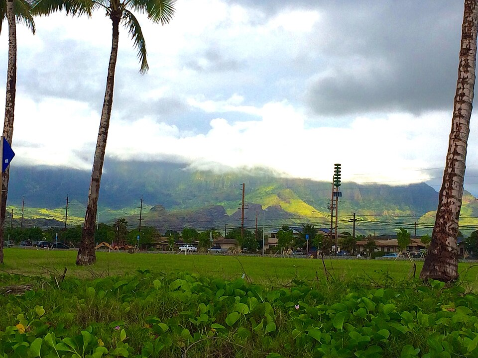

Māʻili
Place: Māʻili, Oʻahu
Type: Coastal community / traditional place name
Name meaning: A shortened form of māʻiliʻili, referring to the pebbles historically found along the shoreline.
Story it tells: How a coastal community within the ahupuaʻa of Lualualei preserves a Hawaiian place name describing its natural shoreline, even as agriculture, military development, and residential growth have transformed the surrounding landscape.

Māʻili is a coastal community on Oʻahu's Waiʻanae Coast, in the ahupuaʻa of Lualualei. Its name is a shortened form of māʻiliʻili, meaning pebbly, a reference to the small, smooth stones found along its shoreline. These ʻiliʻili were shaped over time by the erosion of volcanic rock and the tumbling action of streams and ocean waves. These stones had practical and cultural uses in traditional Hawaiian society, including fishing weights, kōnane game pieces, and the stone instruments used by hula dancers.
The shoreline has changed considerably over time. Seasonal surf shifts sand along Māʻili Beach, sometimes cover the underlying stones. Inland, streams and natural drainage patterns have been manipulated for agriculture, flood-control, and broader development. The name Māʻili preserves a description of the coast as it was known to earlier generations and sometimes shows up today denpending on the seasonal ocean conditions.
Lualualei ahupuaʻa supported Hawaiian communities whose livelihoods drew upon both the ocean and the valley. Coastal families harvested fish, limu, and shellfish, while planting ʻuala and other crops adapted to the dry conditions of leeward Oʻahu. Farther inland, deeper in the valley, springs and seasonal waterways supported additional agriculture. Māʻili was part of this broader landscape, where access to marine resources, cultivated lands, and the mountains sustained many.
During the nineteenth and early twentieth centuries, ranching and sugar reconfigured Lualualei. Reservoirs and irrigation works were constructed to capture water in a valley where rainfall was limited and unevenly distributed. Quarrying also became part of the local economy, drawing upon the area's volcanic rock and limestone deposits for construction materials, specifically coarse aggregate.
Another major transformation came with the expansion of the United States military into Lualualei during the twentieth century. The Navy established ammunition storage and communications facilities across portions of the valley. Among the most recognizable landmarks are the enormous radio towers of the Naval Radio Transmitter Facility Lualualei, whose twin 1,503-foot masts were completed in 1972. The installation remains in use with long-range naval communications. Its existence dictate land use in the area as it requires massive space in surface distance and no obstructions from nearby structures thus limiting overall development.
As agriculture declined and Oʻahu's population expanded, Māʻili developed into a predominantly residential community along Farrington Highway. Māʻili Beach Park, neighborhood schools, and community facilities became important gathering places. The valley's older agricultural and military landscapes remain visible behind the coastal neighborhoods, alongside engineered drainage channels that have changed how water moves from the mountain to the sea.
Today, Māʻili is known more readily for its beaches, neighborhoods, and views of the Waiʻanae Mountains than for the pebbles that gave it its name. Yet the name remains a connection to an earlier shoreline and to the Hawaiian practice of identifying places through the distinctive characteristics of their natural environment.